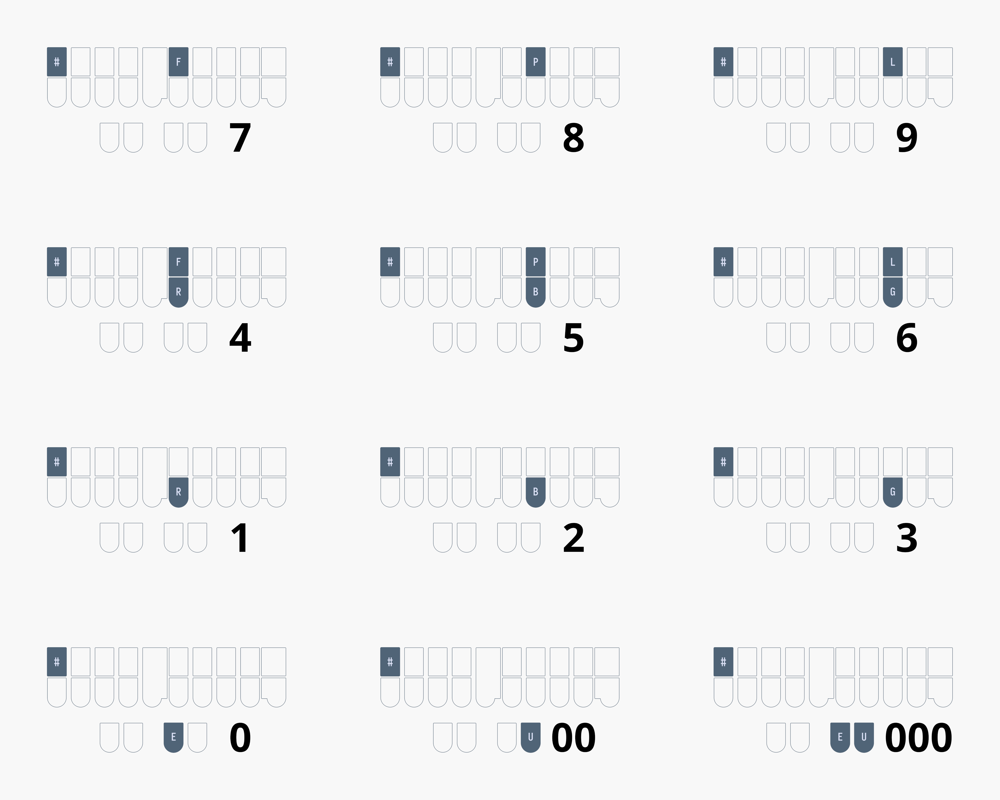

If you have learned Plover theory and are considering switching to Lapwing, have a read through of this page before deciding!
Plover Theory
Plover theory is a perfectly capable theory. After all, Mirabai Knight, the founder of the Open Steno Project, uses it in her professional work as a stenocaptioner. She has graciously provided her own dictionary (main.json) for us hobbyists to use. As with all professional stenographers, she built the majority of this dictionary by herself, having added many of the entries over the years.
However, everyone writes differently. In fact, no two stenographers’ dictionaries are ever the same. Many of the entries in main.json are simply what made sense to Mirabai at the time. They do not always follow systematic and rigorous rules. Plover theory itself is not very well defined in some areas; to illustrate this, have a look at all the ways to write “monotonous” in main.json:
"PHO/TPHOT/TPHOUS": "monotonous",
"PHOE/TPHOT/TPHOUS": "monotonous",
"PHOE/TPHOT/TPHUS": "monotonous",
"PHOPB/OT/TPHOUS": "monotonous",
"PHOPB/OT/TPHUS": "monotonous",
"PHOPB/TOPB/TPHUS": "monotonous",
"PHOPB/TPHOT/TPHOUS": "monotonous",
There are many different ways to write this word simply because there are no simple rules when it comes to splitting multisyllable words. This would be fine if the dictionary contained every single valid combination, but it doesn’t. After all, it is a very time consuming task to add multiple entries for every single word. In the above example, PHOPB/TPHOT/TPHUS is missing.
The learning resources such as Learn Plover! and Art of Chording also do not mention any rules about doubling consonants between strokes or about using OUS vs US. While, I can advise against using US from having used main.json for a year, it is much harder for me to give a recommendation when it comes to doubling consonants in multisyllable words. It is just poorly defined, and the dictionary does not contain any easy to recognize patterns.
One more issue with main.json that is illustrated in the example above is the fact that many write-out entries require briefing techniques. In this case, you must drop the third “o” in “monotonous” since it is unstressed in order to write it out. This is fine for speed, but can be confusing for learners.
The common wisdom to work around these issues (if you would like to stick with Plover theory and main.json) is to simply just add entries to fill in these gaps. If you do not want to have to drop unstressed vowels, just add the entry yourself. If you disagree with the dictionary’s preference towards OUS, it’s trivial to add the alternative entries. After all, there is no such thing as a “complete” dictionary and stenographers constantly tweak their own.
However, I disagree with the notion that learners should be doing this right from the start. This is my motivation behind creating Lapwing theory. It is basically “Plover theory but more defined” in that there is always one outline that is correct for a given pronunciation.
I’ve also gone more into detail about my motivation behind creating Lapwing theory on my personal website.
Lapwing theory
I created the initial Lapwing dictionary in early 2022 and have been refining it since then. So far, it is in a more or less stable state; I only add miscellaneous entries that I come across in my daily computer usage, or remove bad entries that I discover.
You should not learn Lapwing theory if…
- … you have your own rules to work around the inconsistencies of Plover.
- … you have added well over a few hundred entries already.
- … you brief quite heavily and have memorized many of those
main.json.- Lapwing does contain many briefs, but it is still missing quite a few briefs from
main.json
- Lapwing does contain many briefs, but it is still missing quite a few briefs from
- … you prefer the openness of Plover theory and have adapted your dictionary to your writing style.
- … you dislike the notion of having a single “correct” way to write out a word.
- … you are looking for a theory that is not North American centric.
- Sadly, there are currently no freely available steno theories (that I know of) based on non-North American variants of English.
Using both main.json and lapwing-base.json
If you are used to many of the briefs in Plover’s default main.json dictionary, you can use this dictionary in conjunction with Lapwing. Both Plover and Lapwing theory are very similar, and you might benefit from having both dictionaries in your stack. Whether you would like to have lapwing-base above or below main.json is up to you; if you’d like to use Lapwing write-outs as a base and keep Plover briefs secondary, make sure Lapwing is higher up in your stack. On the other hand, if you’d like to prioritize Plover briefs, put main.json above Lapwing.
However, main.json has a few issues (mainly compound words) which make it slightly troublesome to use with Lapwing. Therefore, instead of using the stock dictionary, I reccommend using Harri’s Lapwing compatible version of main.json.
Differences
To switch to Lapwing theory from Plover theory, you do not necessarily need to work through every single chapter in Lapwing for Beginners. Below is a summary of the differences between Plover and Lapwing. The relevant chapters are also linked, and it is recommended you read these complete the exercises. You can assume anything not listed to be equivalent to Plover theory.
If you would still like to switch to Lapwing theory, I recommend reading through this entire section (and skimming the linked chapters) before finally deciding if trying it out is for you.
Top S number key
Lapwing theory uses the number key quite extensively for proper nouns (and sometimes as another disambiguator). The number bar on professional machines is in an inconvenient location. Furthermore, the finger you use differs depending on the other keys in the stroke. It is also not possible to include the number key in every single chord.
Thumb number keys (thumber keys) aren’t much better either. It is impossible to write #AOEU, for example. Instead, Lapwing theory relocates the number key to the top S key on the left.

Please see chapter 5 to configure Plover to use this key.
KWH for y
Use KWH for the initial “y” consonant.
- yes
KWHES - yurt
KWHURT
Please see chapter 6 for practice.
Note that this only applies to words that are spelled with a y. Words spelled without a y use no initial consonant chord.
- use
AOUS - utility
AOU/TEUL/TEU
TP* for ph
Use TP* for the left hand “ph” consonant.
- phone
TPO*EPB - morphology
PHOR/TPO*/HRO/SKWREU
WR for wr
Use WR for the left hand “wr” consonant.
- wrap
WRAP - write
WRAOEUT
WH for wh
Use WH for the left hand “wh-” consonant.
- when
WHEPB - white
WHAOEUT
Usage of AU
The AU vowel has the same sound as O as in “bot”, but is used in words that are not spelled with a single o.
- bought
PWAUT - watt
WAUT
Please see chapter 8 for practice.
*PL for mp
Unlike Plover theory, Lapwing exclusively uses *PL for the ending “-mp” sound.
- bump
PW*UPL - lamp
HRA*PL
Please see chapter 9 for practice.
-PLT for ment
Use -PLT as a compound cluster for “-ment”.
- garment
TKPWARPLT - torment
TORPLT
Please see chapter 11 for practice.
-LT for let
Use -LT as a compound cluster for “-let”.
- starlet
STARLT - roulette
RAOULT
Please see chapter 11 for practice.
KR to resolve c conflicts
Use KR for the initial c consonant when there is a conflicting word.
- cent
KREPBT- As
SEPBTis already “sent”
- As
- cite
KRAOEUT- As
SAOEUTis already “sight”
- As
Basic words miscellaneous theory
Make sure to read chapter 12 for wrapping up basic words. It especially covers scenarios where you must write single syllable words with more than one stroke.
Prefixes and suffixes
Lapwing theory prioritizes prefix and suffix strokes for the most “obvious” outlines. For example, OUT is given to the {out^} prefix so you must use O*UT or AOUT to write the word “out”.
Suffixes usually use KWR as a linker chord. This chord signifies that the stroke should attach to the previous word. For example, to write the word “flotation”, you would write TPHROET/KWRAEUGS.
You should also only use prefixes and suffixes when it semantically makes sense. For example, you would not write the “er” in the word “coriander” using the {^er} suffix since “coriand” is not a root word that the suffix is modifying.
Make sure to read chapter 13 for more detail on how prefixes and suffixes work.
Here are some common prefix strokes that take precedence over words:
| Prefix/word | Prefix Outline | Recommended word outline(s) | Explanation |
|---|---|---|---|
| a | A | AEU | A* is already used. |
| bi^ (by) | PWAOEU | PWEU | There is a three way conflict between “by”, “bye”, and “buy”. |
| be | PWE | -B | Useful in phrase briefs. |
| for | TPOR | TP-R or TPAURT | Useful in phrases like “for the” TP-RT. |
| in | EUPB | TPH | Useful in phrases like “in the” TPH-T. |
| or | OR | AOUR or AUR | O*R is already used. |
| out | OUT | O*UT or AOUT | Either works. |
| on | OPB | O*PB or AUPB | Either works. |
| tri^ (try) | TRAOEU | TRAO*EU or TREU | The first is the more “formal” outline, but the second matches the pattern with “by”. |
Multistroke prefixes also take precedence over multistroke words (e.g., UPB/TKER is the prefix “under-”) and in these cases the word variant is written by using the asterisk key in the second stroke.
Compound words
Compound words are written by including the asterisk in the first stroke of the second word.
- eyelash
AOEU/HRA*RB - grasshopper
TKPWRAS/HO*P/*ER
Please see chapter 14 for more details.
Syllabic splitting
Lapwing theory uses a strict method of splitting syllables. In short, every single stroke should start with a consonant (or KWR) and should not double the same consonant sound across two strokes.
- bunion
PWUPB/KWROPB - conscientious
KOPB/SHEU/KWREPB/-RBS - monotonous
PHO/TPHO/TO/TPHUS - shatter
SHA/TER - tomato
TO/PHAEU/TOE - violet
SRAOEU/KWROLT
This is one of Lapwing’s key differences, so be sure to read chapter 15.
Right hand numberpad
Numbers are written one digit at a time using a right hand numberpad and the number key.

Please see chapter 17 for more details.
Proper nouns
Proper nouns are written by including the number key in the first stroke of the proper noun.
- Bob
#PWOB - Cameron
#KA/PHER/KWROPB
Miscellaneous theory principles
Be sure to read chapter 21.
How to get started
Setting up Lapwing
It is highly recommended that you use the plover-lapwing-aio plugin. This will automatically install the right plugins, dictionaries, and adds some other quality-of-life improvements such as relocating the number key for you and reverting the special number key behaviour. See chapter 5 for setting up Lapwing with this plugin.
However, if you already have several dictionaries with Plover theory, you can also just add the Lapwing dictionaries to your stack. All the Lapwing dictionaries are fully compatible with Plover without having to make any modifications. See appendix B for details.
Transitioning to Lapwing
Keep this page bookmarked and refer back to it whenever you run into trouble. Chapters 12, 13, 14, and 15 are especially important and I recommend at least skimming through these before you go “cold turkey” with Lapwing.
More tips to come…